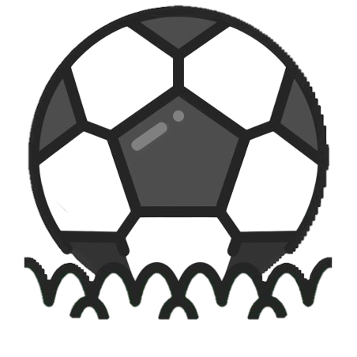

축구(풋살) 
축구와 풋살 둘 다 좋아하지만 축구를 더 좋아합니다.
한 주를 시작하기 전에 축구나 풋살 약속이 있으면
그것만 기다리며 버틸 정도로 좋아하는 운동입니다.
학기 중에는 바빠서 많이 못 하지만
여유가 되면 1주일에 한번은 꼭 하는 편입니다.
축구(풋살) 약속은 언제든 환영입니다 ㅎㅎ
헬스
헬스를 제대로 시작한 지는 1년 정도 밖에 안 됐지만
지금은 안 하면 어색할 정도로 습관이 된 취미입니다.
바쁘지 않으면 1주일에 3일 이상은 하는 것 같습니다.